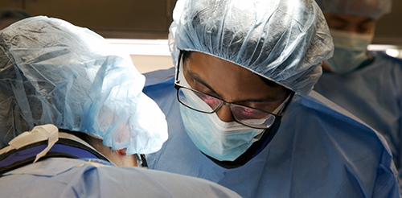

amit-ayer@northwestern.edu

Education
Resident
Department of Neurological Surgery
Masters of Business Administration
Doctor of Medicine
Bachelor's of Science
Microbiology and Immunology
Research Experience
Research Assistant; Department of Neurological Surgery
PI: E. Sander Connolly, MD
Honor's Thesis; Department of Microbiology and Immunology
PI: Katrina Gee, PhD
Research Assistant; Department of Neurobiology
PI: Meldrum Robertson, PhD
Current Research
Investigating the use of transcranial direct cortical stimulation in the acquisition of surgical tasks
PI: Joshua Rosenow, MD
Noninvasive biosensors for the detection of implantable CSF diversion device malfunction
PI: Matthew Potts, MD and John Rogers, PhD
Factors affecting intraoperative seizures in patients undergoing awake craniotomy
PI: Matthew Tate, MD PhD
Professional Memberships
American Association of Neurological Surgeons
Congress of Neurological Surgeons
Certifications
Primary Examination
Advanced Cardiac Life Support
Basic Life Support
International Experience
Peer Educator
Nairobi, Kenya
Global Health Intern
Mau, India